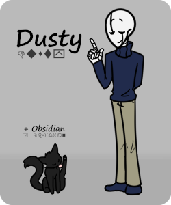
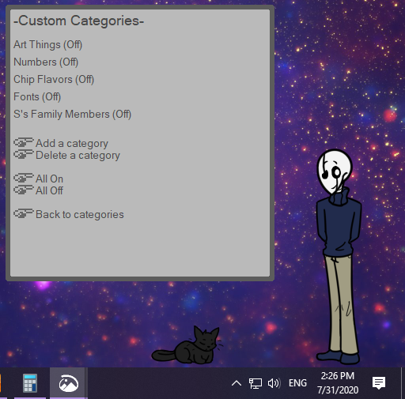
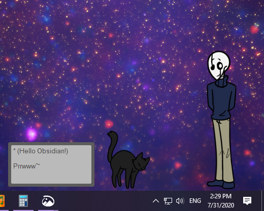

Dusty
Dusty is one of my interpretations of Gaster, from Undertale! He also has his cat Obsidian. He has some backstory, but most of his focus is on his Wingdings functions. He can help you learn to read Wingdings! Or any dingbats font you like!
He can translate things in and out of Wingdings, and has a small selection of games and quizzes as well! These games let you earn G, which you can use to buy items for Obsidian.

The games draw words from different categories that you can toggle on and off, and you can create your own categories too with as many words as you like!

Obsidian has a much simpler set of functions, which are all very silly. You can also drag and drop her onto Dusty to have him pick her up!
I hope to keep adding more in the future, so keep an eye out for updates!
Member of the Ukagaka/Ghost Development and Download webring
Previous Random Next